Leading example. "From design of experiments to analysis of variance of multivariate data: a tutorial review on ANOVA simultaneous component analysis"
Submitted to Journal of Chemometrics. 2026.
Please, reference the following paper if using this data:
C. Diaz, C. González-Olmedo, L. Díaz-Beltrán, J. Camacho, P. Mena García, A. Martín-Blázquez, M. Fernández-Navarro, A. L. Ortega-Granados, F. Gálvez-Montosa, J. A. Marchal, et al., “Predicting dynamic response to neoadjuvant chemotherapy in breast cancer: a novel metabolomics approach,” Molecular Oncology, vol. 16, no. 14, pp. 2658–2671, 2022.
Dependencies:
- MEDA Toolbox v1.11 at https://github.com/codaslab/MEDA-Toolbox
coded by: Jose Camacho Paez (josecamacho@ugr.es) last modification: 27/Feb/2026
Copyright (C) 2026 University of Granada, Granada
This program is free software: you can redistribute it and/or modify it under the terms of the GNU General Public License as published by the Free Software Foundation, either version 3 of the License, or (at your option) any later version.
This program is distributed in the hope that it will be useful, but WITHOUT ANY WARRANTY; without even the implied warranty of MERCHANTABILITY or FITNESS FOR A PARTICULAR PURPOSE. See the GNU General Public License for more details.
You should have received a copy of the GNU General Public License along with this program. If not, see http://www.gnu.org/licenses/.
Contents
Inicialization
clear close all clc data = importdata('TN_data.xlsx'); X = data.data; obs_l = data.textdata(2:end,1); class = data.textdata(2:end,2); time = X(2:end,1); tl = {'Basal','Presurgery','Postsurgery'}; timel = tl(time)'; for i=1:length(X(1,:)) var_l{i} = num2str(X(1,i)); end X = X(2:end,2:end); var_l(1) = []; pac_l = obs_l; for i=1:length(pac_l) pac_l{i} = pac_l{i}(1:5); end F = [string(class), string(timel), string(pac_l)]; pvalue = 0.05
pvalue =
0.0500
Check outliers with PCA
scoresPca(X,'PCs',1:2,'Preprocessing',2,'ObsClass',class,'ObsLabel',pac_l); saveas(gcf,'./Figures/pca12') saveas(gcf,'./Figures/pca12.eps','epsc') [Dst,Qst] = mspcPca(X,'Preprocessing',2,'PCs',1:2,'ObsClass',class,'ObsLabel',pac_l); ylabel('Q-statistic');xlabel('D-statistic') saveas(gcf,'./Figures/pca-mspc') saveas(gcf,'./Figures/pca-mspc.eps','epsc')
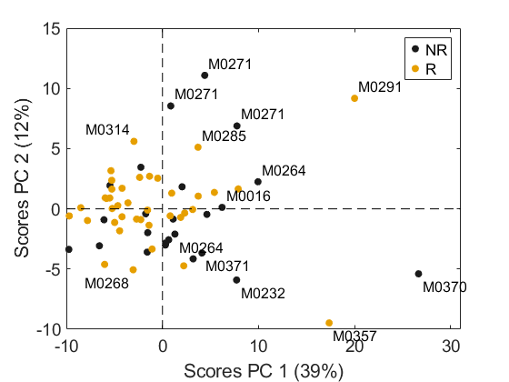
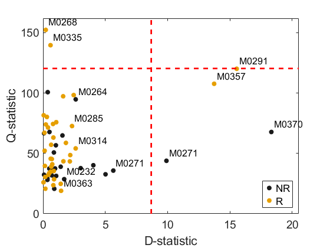
Check outliers with ASCA
[table, struct] = parglm(X, F,'Preprocessing',2,'Model', [1 2], 'Fmtc', 0, 'Nested', [1 3], ... 'Random', [0 0 1]); table.Source(1:3)={"Responder","Time","Patient"} table2latex(table, 'ASCA.tex', '%.2f'); model = asca(struct); % Anomalies check q = sum(model.residuals.^2,2); for f=1:2 uf = unique(F(:,f)); g = string; for l=1:length(uf) g(find(ismember(F(:,f),uf(l)))) = uf(l); end figure, boxplot(q,g); set(gca,'XTickLabel',uf,'XTickLabelRotation',45,'FontSize',18) ylabel('Q-statistic of Residuals','FontSize',18) saveas(gcf,sprintf('./Figures/Res%d',f)) saveas(gcf,sprintf('./Figures/Res%d.eps',f),'epsc') end f = 3; uf = unique(F(:,f)); g = zeros(size(q)); for l=1:length(uf) g(find(ismember(F(:,f),uf(l)))) = l; end [~, ind ] = sort(time); plotScatter([g(ind),q(ind)],'ObsClass',timel(ind),'EleLabel',pac_l(ind)); set(gca,'XTick',1:length(uf),'XTickLabel',uf,'XTickLabelRotation',45,'FontSize',14) axis([0 length(uf)+1,0,400]) legend('Basal','Presurgery','Postsurgery','Location','northwest') ylabel('Q-statistic of Residuals','FontSize',18) saveas(gcf,sprintf('./Figures/Res%d',f)) saveas(gcf,sprintf('./Figures/Res%d.eps',f),'epsc') plotScatter([g(ind),q(ind)],'ObsClass',F(ind,1),'EleLabel',pac_l(ind)); set(gca,'XTick',1:length(uf),'XTickLabel',uf,'XTickLabelRotation',45,'FontSize',14) axis([0 length(uf)+1,0,400]) uf = unique(F(:,1)); legend(uf{1},uf{2},'Location','northwest') ylabel('Q-statistic of Residuals','FontSize',18) saveas(gcf,sprintf('./Figures/Res%db',f)) saveas(gcf,sprintf('./Figures/Res%db.eps',f),'epsc')
table =
6×7 table
Source SumSq PercSumSq df MeanSq F Pvalue
___________________ ______ _________ __ ______ _______ ________
{["Responder" ]} 324.89 4.6664 1 324.89 2.3224 0.052947
{["Time" ]} 184.87 2.6552 2 92.433 0.98395 0.49151
{["Patient" ]} 2658 38.177 19 139.9 1.4892 0.006993
{'Interaction 1-2'} 257.26 3.695 2 128.63 1.3693 0.18881
{'Residuals' } 3569.7 51.271 38 93.94 NaN NaN
{'Total' } 6962.4 100.46 62 112.3 NaN NaN
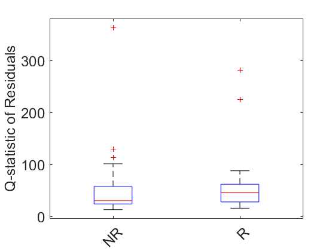
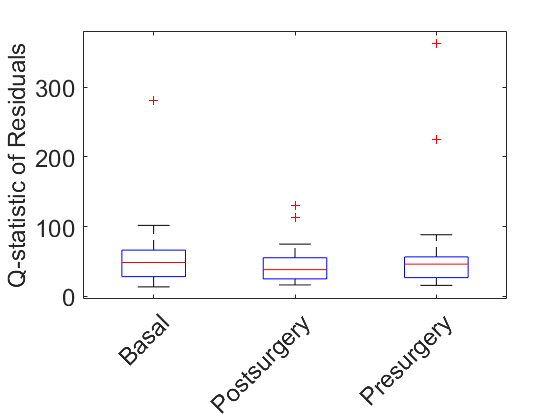
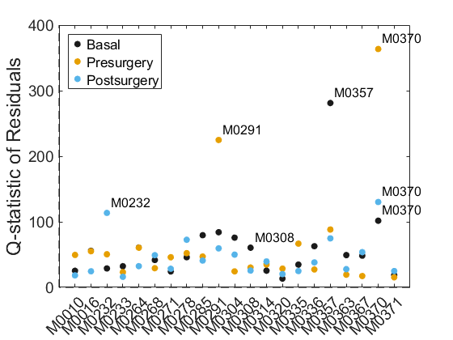
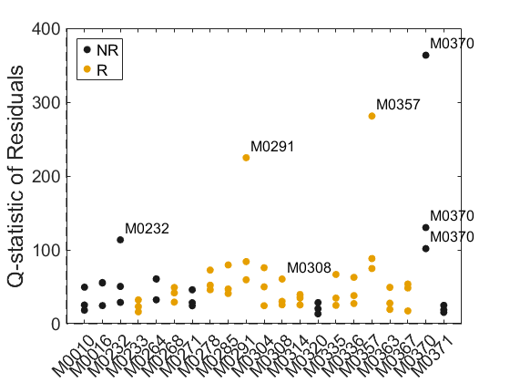
Try with the rank transform
[table, struct] = parglm(rankTransform(X), F,'Preprocessing',2,'Model', [1 2], 'Fmtc', 0, 'Nested', [1 3], ... 'Random', [0 0 1]); table.Source(1:3)={"Responder","Time","Patient"} table2latex(table, 'ASCA2.tex', '%.2f'); model = asca(struct); % Anomalies check q = sum(model.residuals.^2,2); for f=1:2 uf = unique(F(:,f)); g = string; for l=1:length(uf) g(find(ismember(F(:,f),uf(l)))) = uf(l); end figure, boxplot(q,g); set(gca,'XTickLabel',uf,'XTickLabelRotation',45,'FontSize',18) ylabel('Q-statistic of Residuals','FontSize',18) saveas(gcf,sprintf('./Figures/Res2%d',f)) saveas(gcf,sprintf('./Figures/Res2%d.eps',f),'epsc') end f = 3; uf = unique(F(:,f)); g = zeros(size(q)); for l=1:length(uf) g(find(ismember(F(:,f),uf(l)))) = l; end [~, ind ] = sort(time); plotScatter([g(ind),q(ind)],'ObsClass',timel(ind),'EleLabel',pac_l(ind)); set(gca,'XTick',1:length(uf),'XTickLabel',uf,'XTickLabelRotation',45,'FontSize',14) axis([0 length(uf)+1,0,400]) legend('Basal','Presurgery','Postsurgery','Location','northwest') ylabel('Q-statistic of Residuals','FontSize',18) saveas(gcf,sprintf('./Figures/Res2%d',f)) saveas(gcf,sprintf('./Figures/Res2%d.eps',f),'epsc')
table =
6×7 table
Source SumSq PercSumSq df MeanSq F Pvalue
___________________ ______ _________ __ ______ ______ ________
{["Responder" ]} 376.68 5.4079 1 376.68 2.5982 0.030969
{["Time" ]} 194.35 2.7902 2 97.173 1.078 0.39161
{["Patient" ]} 2754.5 39.546 19 144.98 1.6083 0.001998
{'Interaction 1-2'} 244.62 3.5119 2 122.31 1.3568 0.18482
{'Residuals' } 3425.5 49.179 38 90.144 NaN NaN
{'Total' } 6965.4 100.43 62 112.34 NaN NaN
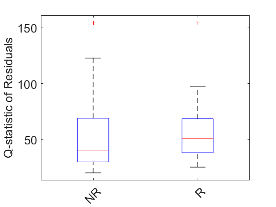
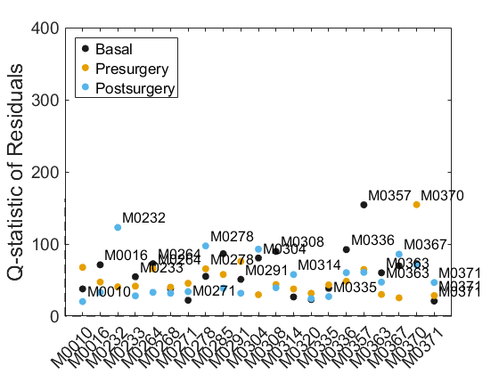
Delete outliers and Check again
indO = find(ismember(F(:,3),'M0357')); % Outlier X(indO,:) = []; F(indO,:) = []; obs_l(indO) = []; class(indO) = []; time(indO) = []; timel(indO) = []; pac_l(indO) = []; indO = find(ismember(F(:,3),'M0370')); % Outlier X(indO,:) = []; F(indO,:) = []; obs_l(indO) = []; class(indO) = []; time(indO) = []; timel(indO) = []; pac_l(indO) = []; indO = find(ismember(F(:,3),'M0291')); % Outlier X(indO,:) = []; F(indO,:) = []; obs_l(indO) = []; class(indO) = []; time(indO) = []; timel(indO) = []; pac_l(indO) = []; [table, struct] = parglm(X, F,'Preprocessing',2,'Model', [1 2], 'Fmtc', 0, 'Nested', [1 3], ... 'Random', [0 0 1]) table.Source(1:3)={"Responder","Time","Patient"} table2latex(table, 'ASCA3.tex', '%.2f'); model = asca(struct); % Anomalies check q = sum(model.residuals.^2,2); for f=1:2 uf = unique(F(:,f)); g = string; for l=1:length(uf) g(find(ismember(F(:,f),uf(l)))) = uf(l); end figure, boxplot(q,g); set(gca,'XTickLabel',uf,'XTickLabelRotation',45,'FontSize',18) ylabel('Q-statistic of Residuals','FontSize',18) saveas(gcf,sprintf('./Figures/Res3%d',f)) saveas(gcf,sprintf('./Figures/Res3%d.eps',f),'epsc') end f = 3; uf = unique(F(:,f)); g = zeros(size(q)); for l=1:length(uf) g(find(ismember(F(:,f),uf(l)))) = l; end [~, ind ] = sort(time); plotScatter([g(ind),q(ind)],'ObsClass',timel(ind),'EleLabel',pac_l(ind)); set(gca,'XTick',1:length(uf),'XTickLabel',uf,'XTickLabelRotation',45,'FontSize',14) axis([0 length(uf)+1,0,400]) legend('Basal','Presurgery','Postsurgery','Location','northwest') ylabel('Q-statistic of Residuals','FontSize',18) saveas(gcf,sprintf('./Figures/Res3%d',f)) saveas(gcf,sprintf('./Figures/Res3%d.eps',f),'epsc')
table =
6×7 table
Source SumSq PercSumSq df MeanSq F Pvalue
___________________ ______ _________ __ ______ ______ ________
{'Factor 1' } 451.1 7.571 1 451.1 2.7985 0.014985
{'Factor 2' } 150.01 2.5177 2 75.006 0.92 0.61239
{'Factor 3' } 2579.1 43.286 16 161.19 1.9772 0.000999
{'Interaction 1-2'} 204.65 3.4348 2 102.33 1.2551 0.24875
{'Residuals' } 2608.9 43.786 32 81.528 NaN NaN
{'Total' } 5958.3 100.6 53 112.42 NaN NaN
struct =
struct with fields:
factors: {3×1 cell}
interactions: {[1×1 struct]}
data: [54×112 double]
prep: 2
scale: [8.9809e+04 1.0470e+05 2.6293e+04 … ] (1×112 double)
design: [54×3 string]
nFactors: 3
nInteractions: 1
nPerm: 1000
ts: 2
ordinal: [0 0 0]
random: [0 0 1]
fmtc: 0
coding: [0 0 0]
nested: [1 3]
type: 'Simultaneous'
nLevels: [2 3 18]
Xnan: [54×112 double]
df: [1 2 16]
dfint: 2
Tdf: 54
Rdf: 32
D: [54×22 double]
B: [22×112 double]
inter: [54×112 double]
effects: [7.5710 2.5177 43.2860 3.4348 43.7862]
residuals: [54×112 double]
p: [0.0150 0.6124 9.9900e-04 0.2488]
table =
6×7 table
Source SumSq PercSumSq df MeanSq F Pvalue
___________________ ______ _________ __ ______ ______ ________
{["Responder" ]} 451.1 7.571 1 451.1 2.7985 0.014985
{["Time" ]} 150.01 2.5177 2 75.006 0.92 0.61239
{["Patient" ]} 2579.1 43.286 16 161.19 1.9772 0.000999
{'Interaction 1-2'} 204.65 3.4348 2 102.33 1.2551 0.24875
{'Residuals' } 2608.9 43.786 32 81.528 NaN NaN
{'Total' } 5958.3 100.6 53 112.42 NaN NaN
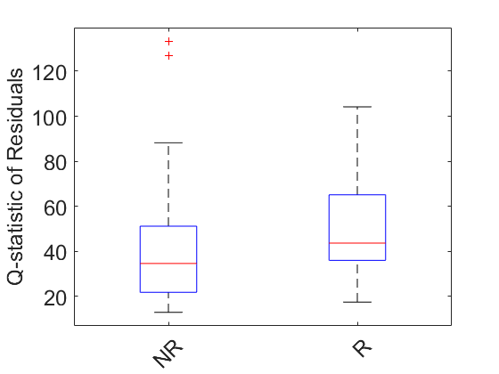
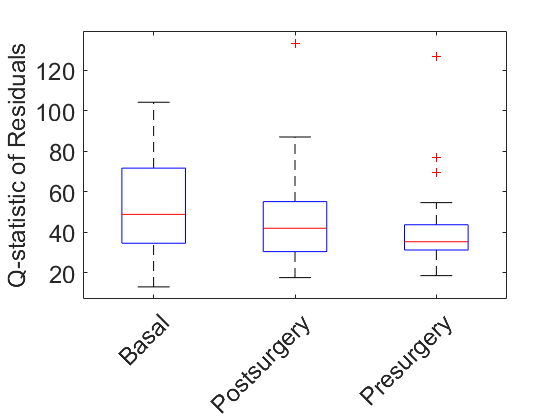
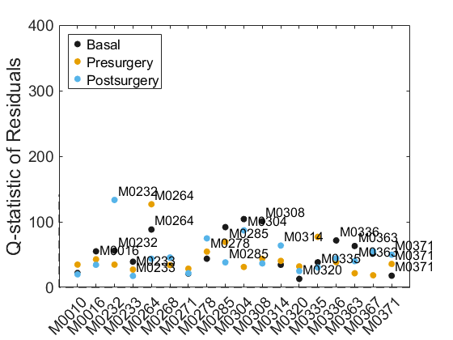
Model visualization: only significant terms
% Factor 1 scores(model.factors{1},'ObsLabel',string(pac_l(1:3:end)),'ObsClass',string(class(1:3:end)),'BlurIndex',1); xlabel('Patients') saveas(gcf,'./Figures/scoresPCA1') saveas(gcf,'./Figures/scoresPCA1.eps','epsc') loadings(model.factors{1},'VarsLabel',var_l,'BlurIndex',1); xlabel('Metabolomic features') saveas(gcf,'./Figures/loadingsPCA1') saveas(gcf,'./Figures/loadingsPCA1.eps','epsc') % Factor 3 model.factors{3}.lvs=1:2; % Visualize the first 2 PCs scores(model.factors{3},'ObsLabel',pac_l,'ObsClass',class,'BlurIndex',1); saveas(gcf,'./Figures/scoresPCA3') saveas(gcf,'./Figures/scoresPCA3.eps','epsc') loadings(model.factors{3},'VarsLabel',var_l,'BlurIndex',1); saveas(gcf,'./Figures/loadingsPCA3') saveas(gcf,'./Figures/loadingsPCA3.eps','epsc') % Visualize the MSPC varPca(model.factors{3}.matrix,'PCs',1:20,'Preprocessing',0); % Either 1 or 4 PCs mspcPca(model.factors{3}.matrix,'Preprocessing',0, 'PCs',1:4,'PlotCal',false,'ObsTest',model.factors{3}.matrix+model.residuals, 'ObsLabel',pac_l,'ObsClass',class,'PValueD',0.001,'PValueQ',0.000001); ylabel('Q-statistic');xlabel('D-statistic') saveas(gcf,'./Figures/residualsPCA3') saveas(gcf,'./Figures/residualsPCA3.eps','epsc') % Residuals modelR = pcaEig(model.residuals,'PCs',1:2); % Visualize the first 2 PCs scores(modelR,'ObsLabel',pac_l,'ObsClass',class,'BlurIndex',1); saveas(gcf,'./Figures/scoresRes') saveas(gcf,'./Figures/scoresRes.eps','epsc') loadings(modelR,'VarsLabel',var_l,'BlurIndex',1); saveas(gcf,'./Figures/loadingsRes') saveas(gcf,'./Figures/loadingsRes.eps','epsc') % Visualize the MSPC varPca(model.residuals,'PCs',1:20,'Preprocessing',0); % 1 PC mspcPca(model.residuals,'Preprocessing',0, 'PCs',1:1, 'ObsLabel',pac_l,'ObsClass',class); ylabel('Q-statistic');xlabel('D-statistic') saveas(gcf,'./Figures/residualsRes') saveas(gcf,'./Figures/residualsRes.eps','epsc')
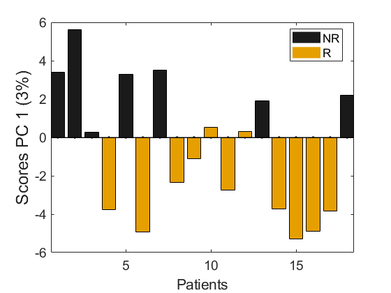
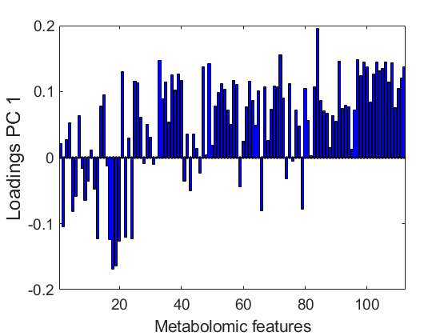
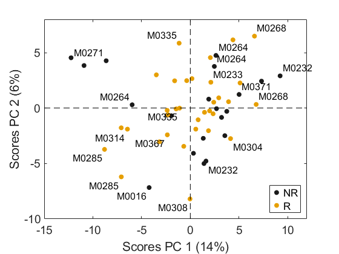
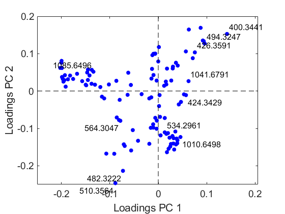
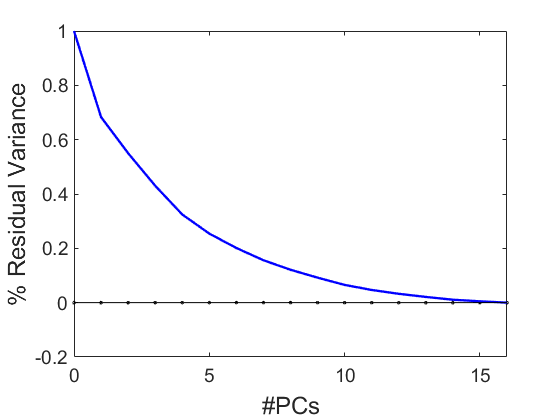
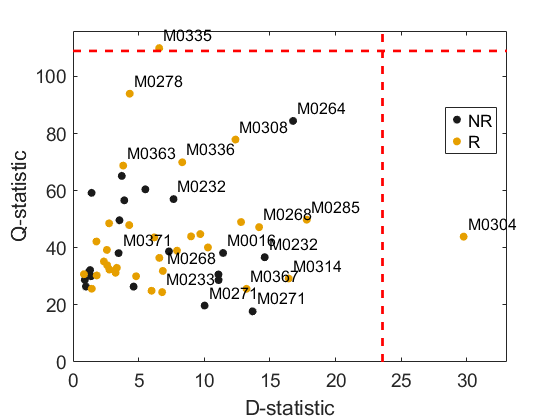
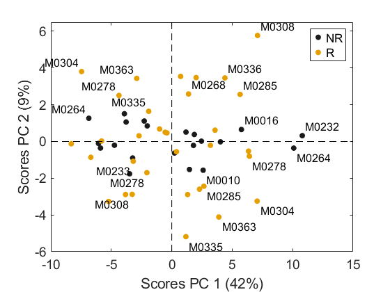
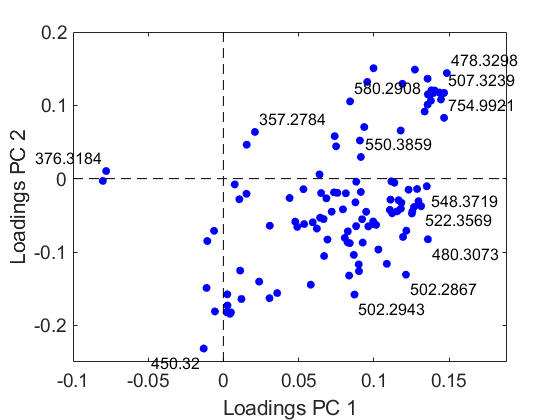
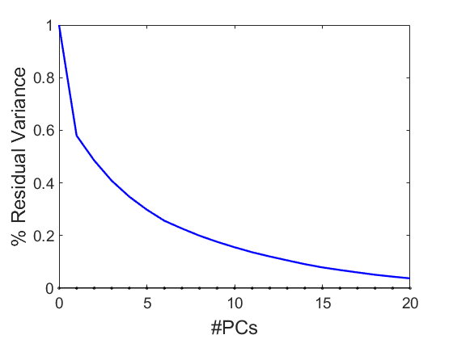
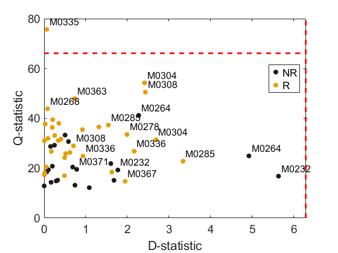